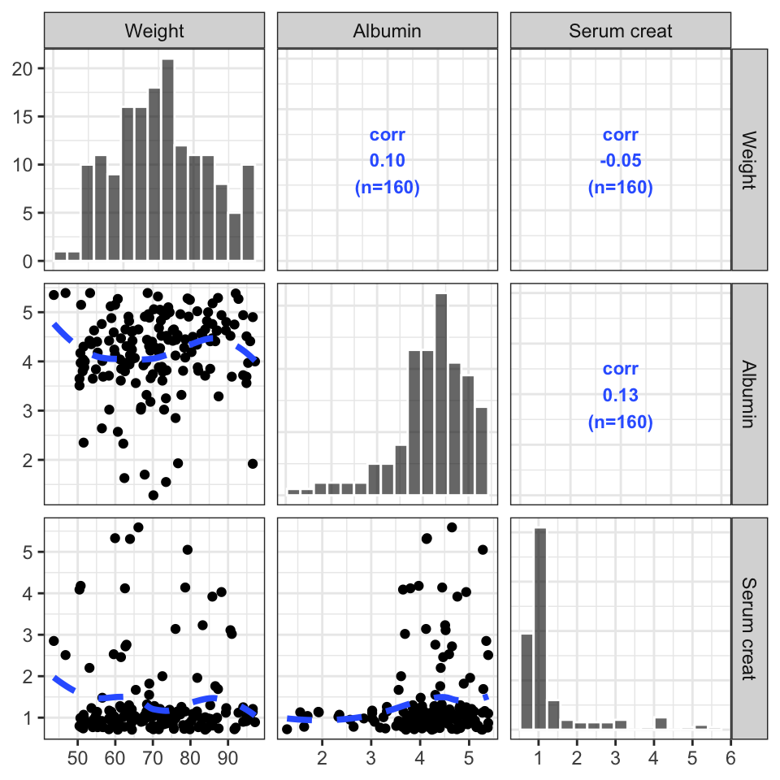

cols <- c("WT//Weight", "ALB//Albumin", "SCR//Serum creat")
pairs_plot(id, cols)
This is a simple wrapper around GGally::ggpairs with some customizations that have been developed internally at MetrumRG over the years.
One customization we’ve added is the annotation on the upper triangle, which is the complete.obs correlation between x and y along with the number of observations.
There is also a function called eta_pairs() that is identical to the pairs_plot() function. This might be helpful to remember the function name but there is no difference in functionality between eta_pairs() and pairs_plot().
Pass a function that customizes the scatter plots on the lower triangle. This function should accept a gg object and add a geom to it